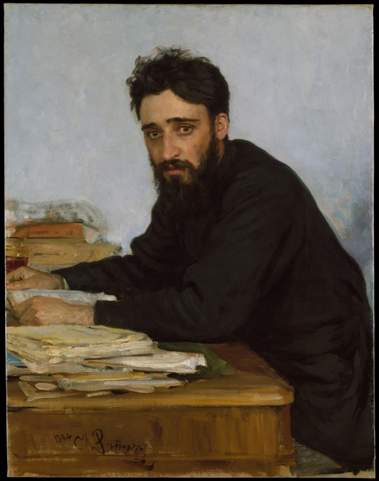
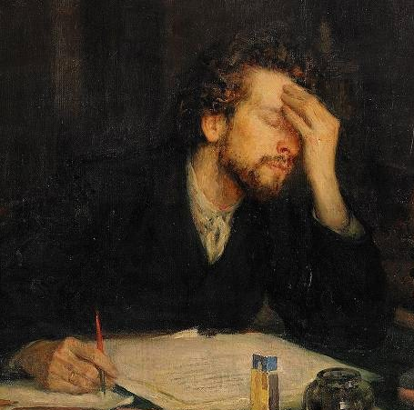

Writing (a book)

The action of writing, and specifically of writing a book, recurs throughout Anna Karenina. As with all motifs, this action acquires meaning by creating patterns throughout the novel, linking together characters, scenes, and plotlines.
Broadly speaking, the motif of writing a book draws attention to traits that are shared among certain characters. Levin and Anna, who are shown to have a profound and thoughtful nature, write books; non-intellectual characters like Vronsky or Oblonsky do not. Within a single character, the recurring action of writing a book, through repetition and variation, can be used to highlight psychological changes. Furthermore, the motif of writing a book links the two main protagonists of the novel, Anna and Levin. Overall, this act is shown throughout Anna Karenina to be fashionable but ultimately futile. Levin The motif of writing a book occurs most prominently in the actions of Levin, as he works on his agricultural treatise throughout the novel. Levin first begins to work on his book in Part Two, when he returns to the country from Moscow after being rejected by Kitty. This work, along with his other responsibilities, help cure him of his sadness about Kitty (Tolstoy 154). Later, in Part Three, Levin has a revelation about agriculture which redoubles his interest in his work. He spends much of his time working on his book during the summer, and he achieves clarity about his work. He sits down to write, an action which is described in some detail: “whole paragraphs” form in his mind, and he begins to write them down (Tolstoy 348). However, Levin then recalls with “unusual vividness” Kitty’s rejection and his recent encounter with her, which temporarily interrupts his work (Tolstoy 348–49). Then, in Part Five, after Kitty and Levin are marries, Levin finds that while he still wants to write his book, it seems “trivial and insignificant” in comparison with his happiness. It is no longer an “escape from life,” but necessary to balance the joy of his love (Tolstoy 486). The motif of writing a book, then, traces Levin’s psychological evolution as he struggles to settle on which aspect of life is most important. He vacillates between two conflicting passions: agricultural theory (intellectual and professional life) or Kitty (romantic and family life). Ultimately, it seems that Levin finds a place for both in his life, but family values take precedence. The intellectual arguments in Levin’s book depend on his vision of the peasants as an elemental force, akin to those in the laws of physics, that must be taken into account in all agricultural undertakings. Levin attempts to describe these convictions on several occasions throughout the novel. In Parts Two and Three, Levin is enthusiastic about his intellectual project. After spending a night on the haystack, he reaches many new conclusions about the problems with agriculture, and notes that “working on his book about agriculture, in which the labourer would emerge as the linchpin in farming,” was of great help in reaching these new conclusions about agriculture (Tolstoy 324). He espouses his views about the importance of the Russian peasant’s unique characteristics to Sviyashsky and the peasant landowner with conviction (Tolstoy 337–338). Towards the end of the novel, however, when Levin is staying in Moscow, he finds that the atmosphere of the city makes it very difficult to focus on his work. He attempts to discuss his book with Metrov, a famous author (Tolstoy 681). However, when it becomes clear that Metrov’s fundamental differences of opinion make him unable to understand Levin’s ideas, he does not attempt to defend his ideas any further. It seems like his passion for completing his book has waned. At the very end of the novel, Levin’s spiritual revolution leads him to reject rational explanations for the fundamental questions of life (Tolstoy 790–791). While his agricultural treatise is not specifically mentioned — it seems like it no longer occupies Levin’s time — the notion that scientific knowledge provides insufficient support for the important questions of life throws the very basis of Levin’s book into doubt. Levin’s ultimate abandonment of his book is therefore due to this gradual disillusionment with the very ideas upon which it is based. His unfinished book is ultimately a futile project. Anna Anna Karenina herself writes a children’s book in Part Seven of the novel, a fact which links the protagonists Anna and Levin. In comparison with Levin’s writing, which stems from a deep personal commitment to his ideas, Anna’s writing seems to be a dilettantish distraction. However, the action of writing a book, shared with Levin, reinforces the feeling of a profound, personal connection between them that Levin experiences. The fact that the motif of writing a book occurs in the actions of both Anna and Levin also serves a structural function in the novel, as it links the two main plotlines. Parallelisms between Anna and Levin invite the reader to recognize broader similarities between the relationships of Anna/Vronsky and Levin/Kitty. Other Characters Golenishchev, Vronsky’s acquaintance who he meets in Italy, is abroad in order to work on his book. He asserts that he is writing a book, then clarifies that he is not yet writing, but “laying the groundwork” and “gathering materials” (Tolstoy 464). Golenishchev discusses his work in an irritated, aggressive tone, and seems arrogant about his book. But his work is meaningless: Golenishchev “sensed he had nothing to say and continually deluded himself into thinking that his ideas had not yet matured, that he was developing them and gathering materials” (Tolstoy 481). The motif of writing a book links Golenishchev’s project and character to those of Anna and Levin, suggesting similarities between them. In Anna’s case, such a link might hint to the ultimate emptiness of her literary project, which appears as a way to fill space in her life. In Levin’s case, the parallel offers a negative lens on his constant yet unfinished work. Koznyshev is another character that writes a book in the novel, and while (unlike other characters) his work is completed, the project is shown to be equally pointless. Koznyshev expects the book to cause a stir in the literary community, feeling even that it might cause a “revolution in scholarship" (Tolstoy 773). In the end, however, it only receives two minor reviews. Koznyshev is forced to admit that six years of work “had passed without a trace” (Tolstoy 774). His failure is yet another example of how the act of writing a book is shown throughout Anna Karenina to be a waste of effort. Literary Parallels The motif of writing a book also occurs in the works of authors that influenced Tolstoy. English authors like Dickens, Trollope, and Eliot were particularly influential for Tolstoy’s version of the “family novel.” While Eliot’s Middlemarch is by no means a primary influence for Anna Karenina, there are clear parallels between the two works (see this article, and Knapp 136). The action of writing a book is an important plot element in Middlemarch. In Eliot’s novel, the aged and scholarly Casaubon has dedicated his whole life to writing his “masterwork,” the Key to All Mythologies. While the heroine Dorothea initially sees this work as a noble and worthwhile pursuit, we later come to realize that it is essentially futile and meaningless. Although Casaubon continues to work, the project ultimately stalls and remains unfinished at his death. The recurring action of Casaubon working on his book traces Dorothea’s gradual disillusionment with her husband. Casaubon’s project in some respects resembles that of Golenishchev: although he takes his work seriously, he ultimately has nothing to say. To a lesser degree, this parallel extends to Levin. As with Levin, the process of writing is emphasized, and not the completion of the book. Levin’s literary project might be just another example of a fashionable yet futile endeavor.
Works Cited
- Blumberg, Edwina Jannie. "Tolstoy and the English Novel: A Note on Middlemarch and Anna Karenina." Slavic Review, vol. 30, no. 3, 1971, pp. 561–69. JSTOR, https://doi.org/10.2307/2493543.
- Knapp, Liza. Anna Karenina and Others. University of Wisconsin Press, 2016.